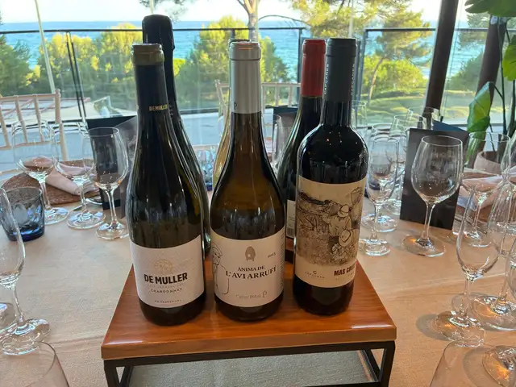
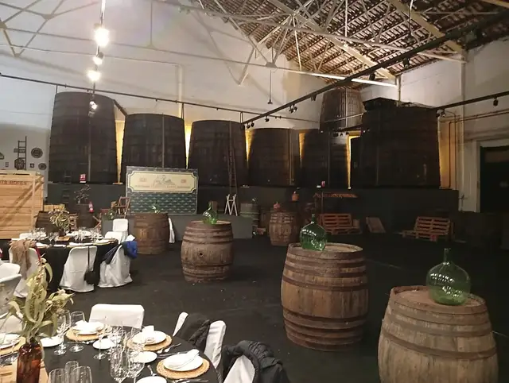

Crónica
Crónica31 de julio de 2026
Cena de Verano 2026
52 comensales en el Club Nàutic de Salou: cóctel en la terraza frente al mar, cena en el salón y pista de baile.
Leer la crónica →Agenda 2026
Las cenas del recorrido, las catas y las celebraciones de la asociación: lo que ya hemos vivido y lo que viene.
La Junta está cerrando la fecha y el restaurante de la última cena de la temporada. Lo anunciamos primero en la newsletter.
Calendario
Más allá del recorrido
Crónica31 de julio de 2026
52 comensales en el Club Nàutic de Salou: cóctel en la terraza frente al mar, cena en el salón y pista de baile.
Leer la crónica →
PróximamenteFecha por confirmar
Una noche para descubrir los vinos de la DO Tarragona. Fecha y lugar por confirmar.
Avísame →Diciembre de 2026
La cena que cierra la temporada 2026. Los premios se entregan después, en la gala de febrero de 2027.
Avísame →
CrónicaTemporada 2025
En los Vermuts Rofes de Reus: Trofeo Gastronia para Buidasacs y Cambium, Premio Bacus para Cirerets de Mas Alta.
Leer la crónica →Las fechas y los lugares se confirman a lo largo de la temporada. La forma más rápida de enterarte es la newsletter o nuestro Instagram.